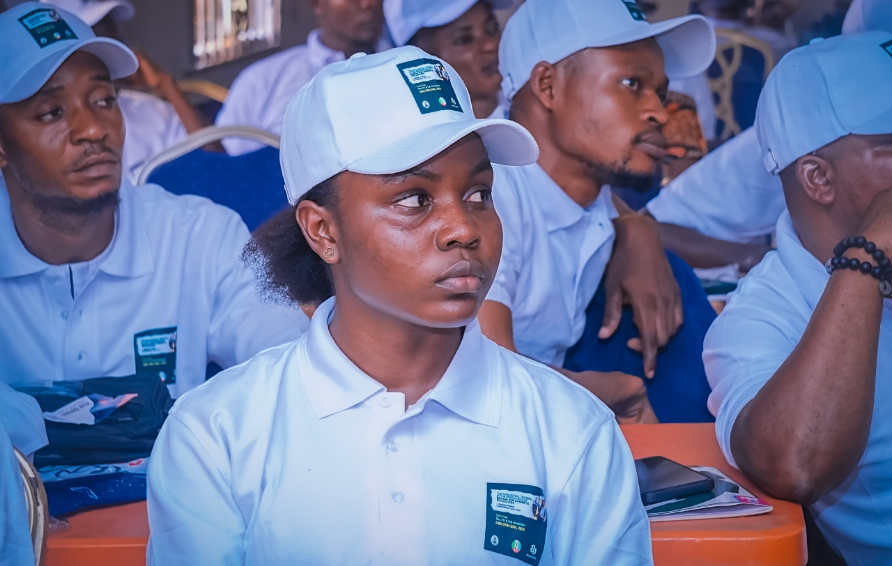
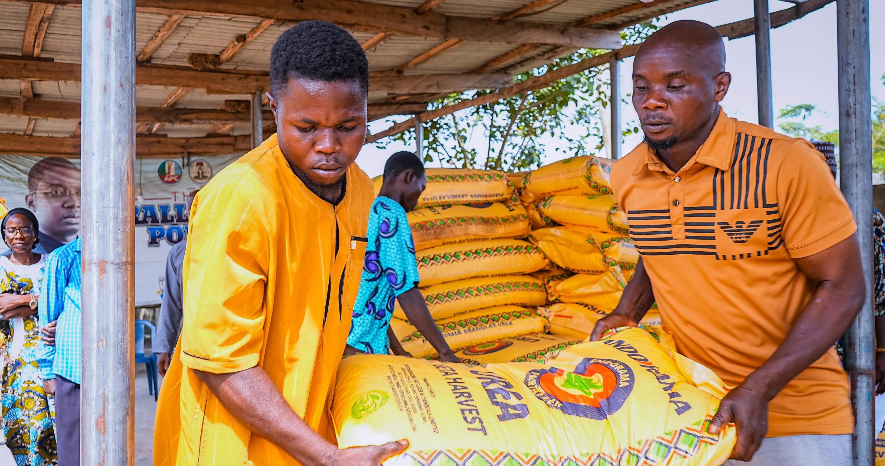
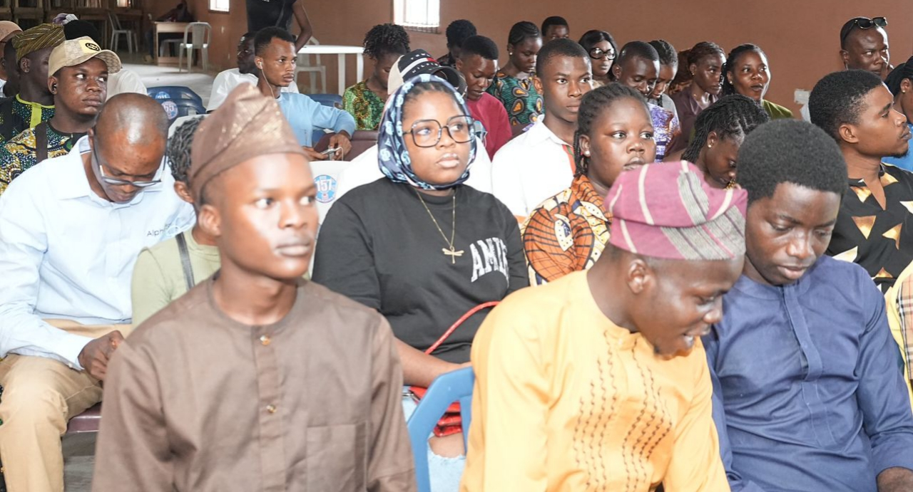

We are proud to announce that over 5,000 residents of Badagry have benefited from the transformative projects spearheaded by Hon. Sesi Whingan. Our commitment to uplifting the community is reflected in our diverse range of initiatives, including youth empowerment programs, scholarship opportunities, and more.
Join us as we continue to foster growth, inspire change, and create a brighter future for all. Together, we are building a thriving community where every individual has the opportunity to succeed.

Sesi Oluwaseun Whingan, born 22 September 1985, is a Nigerian politician and a current House of Representatives member in the 10th National Assembly, representing Badagry Federal Constituency since June 2023.
He has sponsored fifteen bills and moved many motions at the National Assembly. As the founder of the Sesi Whingan Foundation in Badagry, he has contributed to road construction, refurbished primary healthcare centers, recognized outstanding teachers, and supported residents with food and cash gifts.